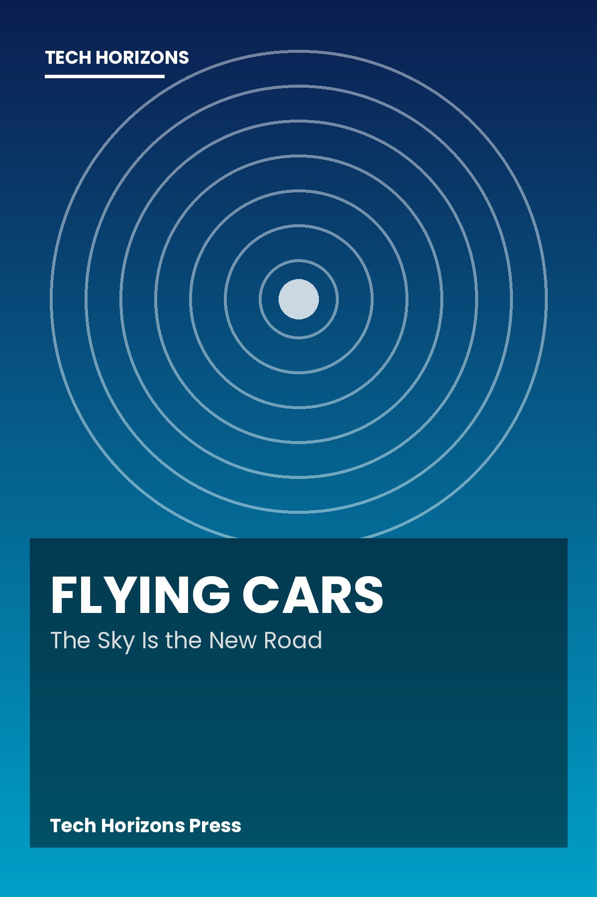

10 short books about new technology. MOBI for older Kindles, EPUB for newer ones.
 | Flying Cars The Sky Is the New Road [ Download MOBI ] [ Download EPUB ] |
| Self-Driving Cars Roads Without Drivers [ Download MOBI ] [ Download EPUB ] | |
| Artificial Intelligence Machines That Learn [ Download MOBI ] [ Download EPUB ] | |
| Quantum Computing A New Kind of Math Machine [ Download MOBI ] [ Download EPUB ] | |
| Humanoid Robots Helpers With Two Legs [ Download MOBI ] [ Download EPUB ] | |
| Space Travel Reborn Rockets That Come Back [ Download MOBI ] [ Download EPUB ] | |
| Fusion Energy Building a Star on Earth [ Download MOBI ] [ Download EPUB ] | |
| Brain-Computer Interfaces Where Thought Meets Machine [ Download MOBI ] [ Download EPUB ] | |
| Drone Delivery Packages From the Sky [ Download MOBI ] [ Download EPUB ] | |
| The Battery Revolution Power for a New Age [ Download MOBI ] [ Download EPUB ] | |